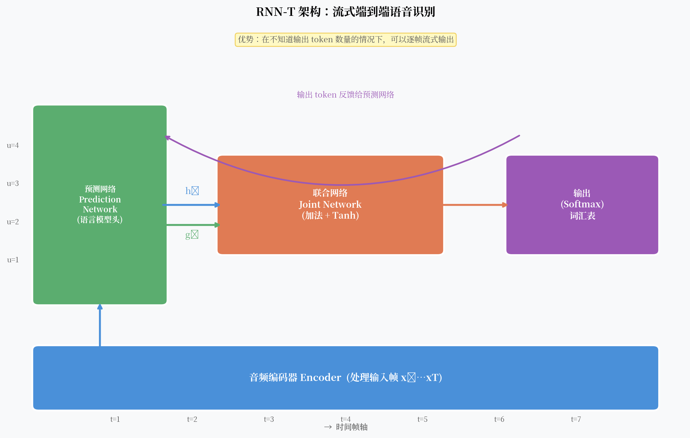

RNN-T：真正流式端到端，Google 是怎么做到的¶
CTC 解决了对齐问题，但留下了一个遗憾：它假设每一帧的输出是条件独立的。这意味着模型不能直接利用"已经输出了什么"来预测"下一个输出是什么"。
2012 年，Alex Graves 在 CTC 的基础上提出了 RNN-T（Recurrent Neural Network Transducer）。核心思想只有一句话：在 CTC 的解码框架里加一个 RNN，让它记住已经输出的 token 序列。
就这一个改动，让模型有了内置的语言建模能力，同时保留了完全的流式能力。

核心观点¶
RNN-T 是目前工业界流式语音识别的首选——它在 CTC 的框架基础上加了一个"语言模型头"（预测网络），通过联合网络将声学信息和语言信息融合，同时保留了不需要对齐标注、可以流式输出的优势。
CTC 的遗憾¶
CTC 的输出概率分解为：
每一帧的输出 \(y_t\) 只依赖输入 \(x\)，与之前输出的 token 序列无关。
这带来一个显然的问题：模型无法学到语言规律。它不知道"q" 后面大概率跟 "u"，不知道"人工智" 后面很可能跟 "能"。
在实践中，CTC 系统必须配合外部语言模型来补偿这个缺陷。但外部语言模型的融合是浅层的（只在 beam search 的 rescoring 阶段），不如内置语言建模来得自然。
RNN-T 的三个组件¶
RNN-T 由三部分组成：
1. 编码器（Encoder）¶
输入：声学特征序列 \(x_1, \ldots, x_T\)
输出：高层声学表示 \(h_1, \ldots, h_T\)
编码器处理输入音频，提取时序声学特征。可以是 LSTM、Conformer 或任意序列模型。
关键点：编码器是因果的（causal），即 \(h_t\) 只依赖 \(x_1, \ldots, x_t\)，不看未来帧。这保证了流式推理能力。
2. 预测网络（Prediction Network）¶
输入：已输出的 token 序列 \(y_1, \ldots, y_{u-1}\)
输出：隐状态 \(g_u\)
预测网络本质上是一个语言模型。它把已输出的 token 序列编码成一个向量，表示"语言层面，下一个 token 是什么"的预期。
其中 \(y_0\) 是特殊的开始 token。
预测网络作为隐式语言模型
预测网络没有看任何声学输入，它只看已输出的 token。从这个角度，它就是一个语言模型。但它是在端到端联合训练的——它学到的语言先验是针对当前 ASR 任务优化的，而不是通用文本语言模型。
3. 联合网络（Joint Network）¶
输入：声学表示 \(h_t\) 和语言表示 \(g_u\)
输出：词汇表上的概率分布
联合网络把当前帧的声学信息和当前输出位置的语言信息融合，输出下一个 token 的概率。
二维格子：时间 × 输出¶
RNN-T 的解码可以想象成在一个二维格子上移动：
- X 轴：时间帧 \(t = 1, \ldots, T\)
- Y 轴：输出 token 位置 \(u = 0, 1, \ldots\)
在格子的每个位置 \((t, u)\)，有两种可能：
- 输出
<blank>：沿 X 轴前进（消耗一帧音频），Y 轴不动 - 输出实际 token：沿 Y 轴前进（输出一个字符），X 轴不动
解码结束的条件：到达最后一帧，且输出 <blank> 离开格子。
这个过程天然是流式的——每读一帧，就可以尝试输出零个或多个 token，不需要等待整段音频。
训练目标¶
RNN-T 的损失和 CTC 类似，都是对所有合法路径的概率求和：
不同的是，RNN-T 的路径概率不再是逐帧独立的乘积，而是在二维格子上的路径概率：
这个求和同样可以用前向-后向算法在 \(O(T \times U \times V)\) 时间内精确计算，其中 \(U\) 是输出序列长度，\(V\) 是词汇表大小。
流式推理¶
流式推理时，编码器每接收一帧就更新 \(h_t\)，然后联合网络在当前帧循环输出 token，直到输出 <blank> 为止。
for t in 1..T:
h_t = encoder.step(x_t) # 逐帧处理
while True:
prob = joint(h_t, g_u)
token = argmax(prob)
if token == <blank>:
break # 跳到下一帧
else:
emit(token)
g_u = prediction_network.step(token) # 更新预测网络
u += 1
这个简单的循环就实现了流式解码，延迟只有一帧（加上编码器的感受野）。
Google 的生产实践¶
RNN-T 是 Google 在 Pixel 手机上语音输入的核心技术。
2019 年，Google 发表了 "Streaming End-to-End Speech Recognition for Mobile Devices"，在 Pixel 手机上实现了：
- 延迟 < 300ms（感知层面接近实时）
- 模型大小 ~ 80MB（可在手机端直接运行）
- 词错率接近服务器端水平
关键技术点： 1. 用 LSTM 做编码器，限制 lookahead（向前看的帧数）控制延迟 2. 量化（INT8）减小模型体积和推理时间 3. 统计语言模型辅助 shallow fusion
2023 年之后，Google 把编码器换成了 Conformer（精度更高），Pixel 系列的语音识别继续以 RNN-T 为基础架构。
RNN-T 的局限¶
1. 训练复杂度高
前向-后向计算需要维护 \(T \times U\) 的二维动态规划表，内存和计算量比 CTC 高很多。序列越长，开销越大。
2. 推理速度依赖预测网络
每个输出 token 都需要运行一次预测网络，无法完全并行化。这在 CPU 上是明显瓶颈。
3. 超参数多
编码器、预测网络、联合网络各自的深度和宽度需要仔细调整。Google 的最佳配置在不同任务上差异很大。
一个开放问题¶
RNN-T 的编码器原本是 LSTM，感受野是因果的（只看过去帧）。如果用注意力机制做编码器，能不能既看全局上下文，又保持流式能力？
Conformer 给出了更好的编码器，但流式 Conformer 的设计本身也是一个有趣的工程问题。